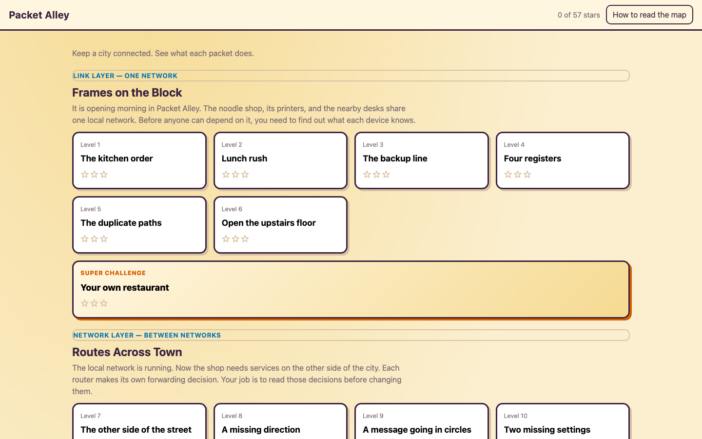
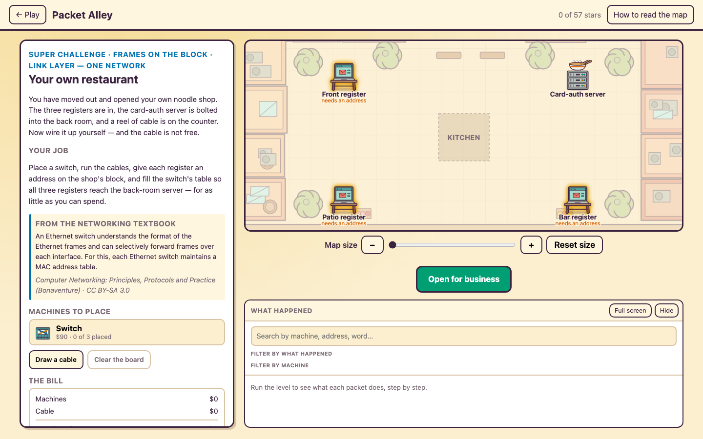
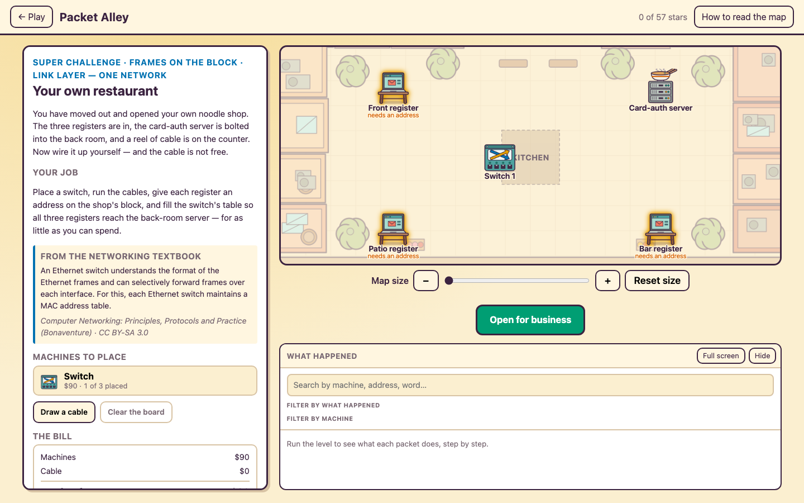
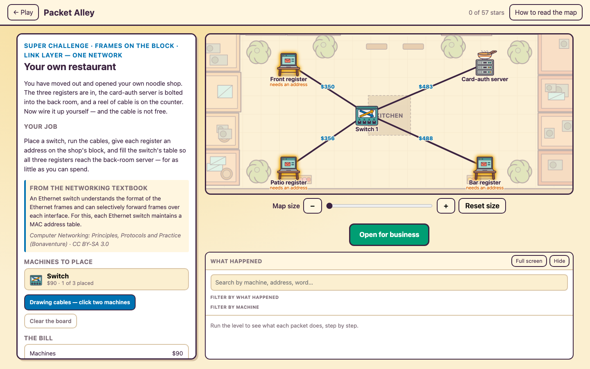
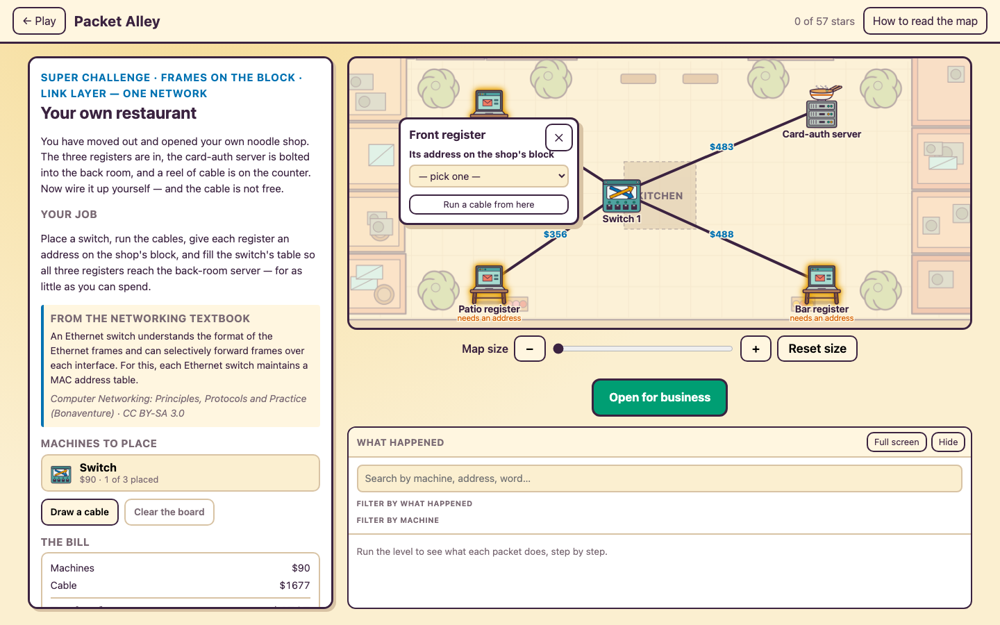
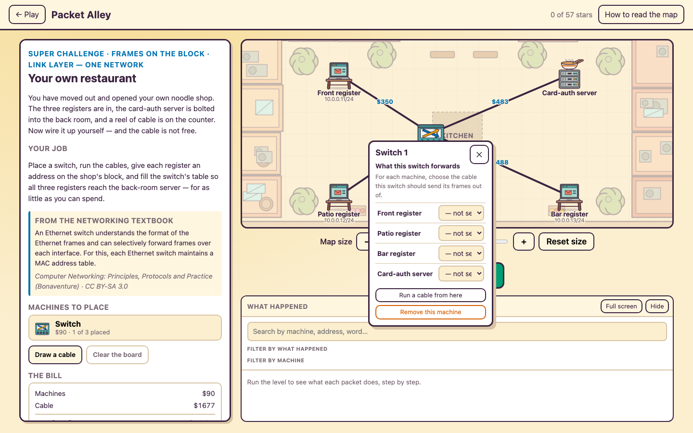
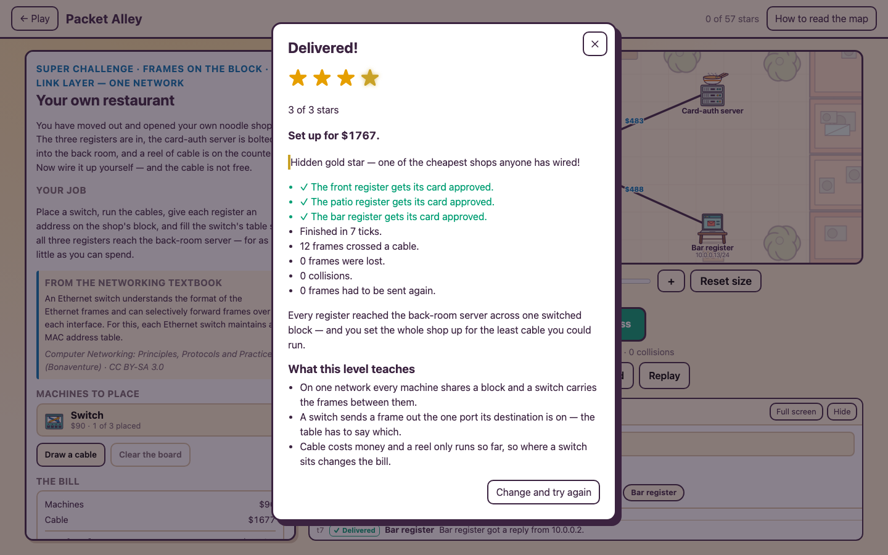
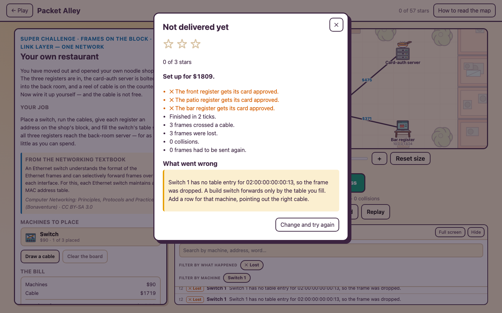

The first of the end-of-zone "super" levels — where the student stops answering one question and builds a whole working network from scratch, under a budget. This entry is the MVP: what it is, every action a student takes, how it's graded, the calls I made, and how the tests keep it honest.
Every teaching zone in Packet Alley ends on a short finale. The super level is the zone's capstone: roughly ten times the graph (nodes plus edges) of anything in the zone, and instead of choosing one option on a fixed map, the student places the machines, runs the cables, assigns the addresses, and fills every table themselves. It is as close to setting up a real network as the game gets, and it still runs on the same deterministic engine as every other level — more pieces for the student to decide, not a new simulation.
The block zone teaches one network: hosts, a switch, frames carried by MAC address. So its super level is a shop you just opened. Three registers sit in far corners, a card-auth server is bolted into the back room, and a reel of cable is on the counter. The cable is not free. The job: get all three registers talking to the server for as little money as you can.

Place machines from a palette · wire them cable by cable within a reel limit · address each machine on the one block · fill the switch's forwarding table. Each one is a real decision the engine then lives or dies by.
given: three registers, one server, a kitchen in the way
The floor opens with only the fixed endpoints in place and glowing, each one asking for an address. The dashed box is the kitchen — a wall you cannot drop a machine on and must route cable around. Nothing is wired yet, so nothing works yet.

action: pick Switch from the palette, click an open spot
A switch costs $90 and the palette says how many are left. Click it to arm it, then click the floor to set it down. Where it sits is the whole optimisation: the closer it is to the four machines, the less cable each run needs — but the geometric sweet spot in the middle is exactly where the kitchen is.

action: turn on Draw a cable, click two machines
Each cable is clicked machine-to-machine and priced the instant it lands — the number on the line is its dollars. A cable longer than the reel allows is refused. The bill updates with every run, so the student sees a straight trade between a tidy layout and a sprawling one.

action: click a register, pick an address from the list
Clicking a machine opens a small panel. A register needs an address on the shop's block. The list is mostly valid choices plus one deliberate trap on a different block — pick that and the register can never reach the server, which is the one-subnet lesson made concrete.

action: click the switch, choose a cable for each machine
A build switch does not learn — the student is its table. For each machine, pick the cable the switch should send that machine's frames out of ("to reach the bar register, send out the cable toward the bar register"). Phrasing it by neighbour means the student never types a port number; they point at the wire they drew.

action: run it on the real engine, watch the packets
Each register sends a card-auth request to the server and waits for the approval to come back. The same deterministic simulation that runs every other level carries it, step by step, in the searchable log. If every register gets its reply, the shop is open.

Leave the server out of the switch table and the run fails with the exact reason, and the step log — filtered to just the losses — shows every dropped frame. The student learns the table matters by watching it not matter.

Passing is simple — all three registers get their approvals back. The stars are about money, and they're set against the distribution of every network a student could reasonably build, not against a hand-picked number. I enumerated every single-switch placement on the floor, priced each one through the engine's own cost, and read the percentiles off that distribution.
| Stars | Among all buildable networks | Total at most |
|---|---|---|
| ★ | it works at all | — (any passing build) |
| ★★ | cheapest two-thirds (≤ 66th percentile) | $1,825 |
| ★★★ | cheapest third (≤ 33rd percentile) | $1,793 |
| ★★★★ gold | cheapest ~5% (≤ 5th percentile) — hidden | $1,776 |
The prices are meant to feel real and to keep the focus on the layout: the registers and the server are already yours, so they cost nothing to the bill; a small switch is $90, and cable is a dollar a unit. With the machines free, the stars reward exactly one thing — a short, clever run of cable (plus not buying a switch you didn't need).
The cheapest place for one switch is the geometric centre of the four machines — which sits dead inside the kitchen. So the true optimum is walled off, and the best a student can do is tuck the switch against a kitchen wall. That one obstacle turns "drop it in the middle" into an actual decision.
RuleA build switch does not learn; it forwards only by the table the student fills, and drops anything the table doesn't cover. This is what makes filling the table a real task instead of a formality — a flooding switch would deliver no matter what you wrote.
RuleThe three registers and the server are placed for you (that's the shop you walked into); the switch and every cable are yours. It keeps the first MVP focused on the wiring-and-cost decision without a blank canvas, while still being a build-from-scratch feel.
RuleTop third, top two-thirds, and a hidden cheapest-5% gold star — read off the real distribution of buildable networks and pinned by a test, so a change to the geometry can't quietly leave the thresholds wrong.
RuleThe address list includes an address on a different block. Choosing it is a clean, self-explaining failure — the register simply can't find the server — which teaches the one-subnet rule by letting the student break it.
LaterTwo cheap switches near the two clusters can cost less than one central switch, and the engine forwards across them correctly. The current distribution only samples single-switch builds, so a two-switch find is simply rewarded as gold — a nice thing to discover. A future pass could fold multi-switch builds into the distribution.
The core owns every decision and does no I/O, so the whole level is testable headlessly — and because students will poke at it in ways I won't predict, the suite is a permutation sweep in the spirit of a survivors-like's "rig space": enumerate the networks a student could build, play each through the real engine, and hold every one to the same rules.
Sixty-one core tests at the time of writing, and ./scripts/check.sh green in all three browsers.
Next zones get their own super levels on the same bones: routers whose forwarding tables and signposts the student sets by hand, and a transport-layer build where the handshake and the windows are theirs to configure.